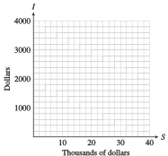

Chapter 1 Linear Models
In the debate over global warming, sea level is a reliable indicator of climate change, because it is affected by both melting glaciers and by the thermal expansion of sea water. During the 20th century, sea level rose by about 15 centimeters, compared to a fairly constant level for the previous 3,000 years.
Not surprisingly, scientists would like to understand the causes of sea-level change as thoroughly as possible, and to measure the rate of sea-level rise as accurately as possible. Using data from satellites and floats (mechanical devices drifting in the ocean), oceanographers at NASA’s Jet Propulsion Laboratory have calculated that the sea level rose, on average, 3 millimeters (0.1 inches) per year between 1995 and 2005. The graph below shows the change in mean sea level, measured in millimeters, over that time period.
The Intergovernmental Panel on Climate Change (IPCC) predicts that sea level could rise as much as 1 meter during the 21st century. If that happens, low-lying, densely populated areas in China, Southeast Asia, and the Nile Delta would become uninhabitable, as well as the Gulf Coast and Eastern Seaboard of the United States.
Investigation 1.1. Investigation 1: Sales on Commission.
Delbert is offered a part-time job selling restaurant equipment. He will be paid $1000 per month plus a 6% commission on his sales. The sales manager tells Delbert he can expect to sell about $8000 worth of equipment per month. To help him decide whether to accept the job, Delbert does a few calculations.
Based on the sales manager's estimate, what monthly income can Delbert expect from this job? What annual salary would that provide?
-
What would Delbert's monthly salary be if he sold only $5000 of equipment per month? What would his salary be if he sold $10,000 worth per month? Compute the monthly incomes for each sales totals shown in the table.
Sales Income \(5000\) \(\hphantom{0000}\) \(10,000\) \(\hphantom{0000}\) \(15,000\) \(\hphantom{0000}\) \(20,000\) \(\hphantom{0000}\) \(25,000\) \(\hphantom{0000}\) \(30,000\) \(\hphantom{0000}\) \(\hphantom{0000}\) \(\hphantom{0000}\) \(\hphantom{0000}\) \(\hphantom{0000}\) -
Plot your data points on a graph, using sales, \(S\text{,}\) on the horizontal axis and income, \(I\text{,}\)on the vertical axis, as shown in the figure. Connect the data points to show Delbert's monthly income for all possible monthly sales totals.
 Add two new data points to the table by reading values from your graph.
-
Write an algebraic expression for Delbert's monthly income, \(I\text{,}\) in terms of his monthly sales, \(S\text{.}\) Use the description in the problem to help you:
He will be paid: $1000 plus a 6% commission on his sales.
Income \(= ~~\underline{\hspace{7.272727272727272em}} \)
Test your formula from part (5) to see if it gives the same results as those you recorded in the table.
Use your formula to find out what monthly sales total Delbert would need in order to have a monthly income of $2500.
Each increase of $1000 in monthly sales increases Delbert's monthly income by \(\underline{\hspace{2.727272727272727em}}\)
Summarize the results of your work: In your own words, describe the relationship between Delbert's monthly sales and his monthly income. Include in your discussion a description of your graph.